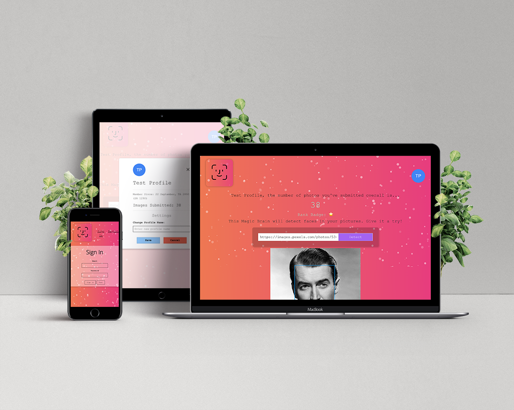
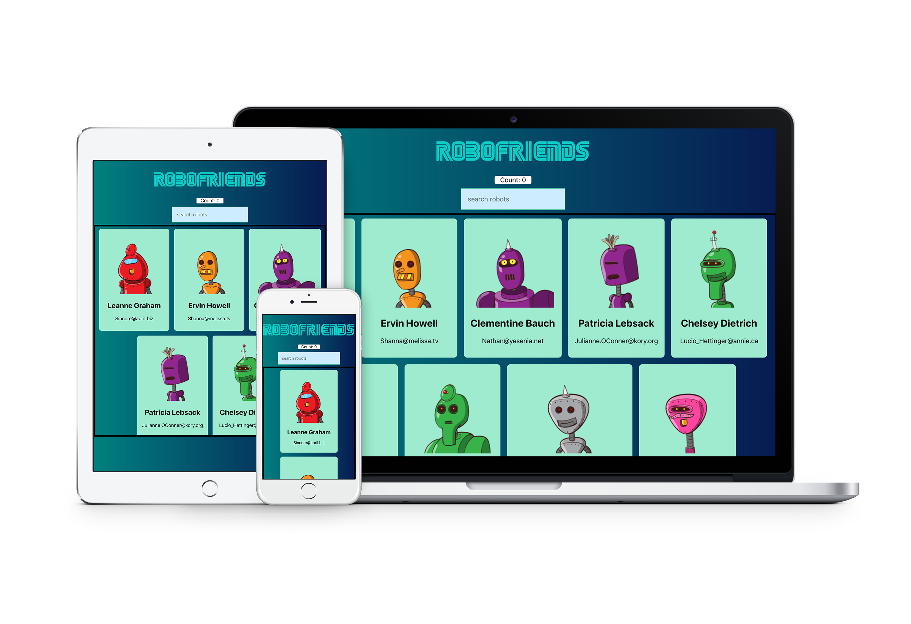

Joshua Guerrero
Full Stack Website Developer | Freelance


Face Recognition
A web application that allows users to submit image ULRs and apply a bounding box around the face in the image. Additional back-end API created to handle fetch calls to NodeJS server. Created for a bootcamp project and customized further after completion of course.
Technologies Used: React.JS, Node.JS, Postgres, Redis, Heroku, GitHub Pages




Robofriends
A web application that demonstrates real-time search of a list of generated profiles using React+Redux for state management.Created for a bootcamp project and customized further after completion of course.
Technologies Used: React.JS, Redux, GitHub Pages

University of Alaska Fairbanks
Bachelors of Science
Interdisciplinary Studies
Minor of Computer Science
Graduated Fall of 2018

contact me @ jrg99654@gmail.com